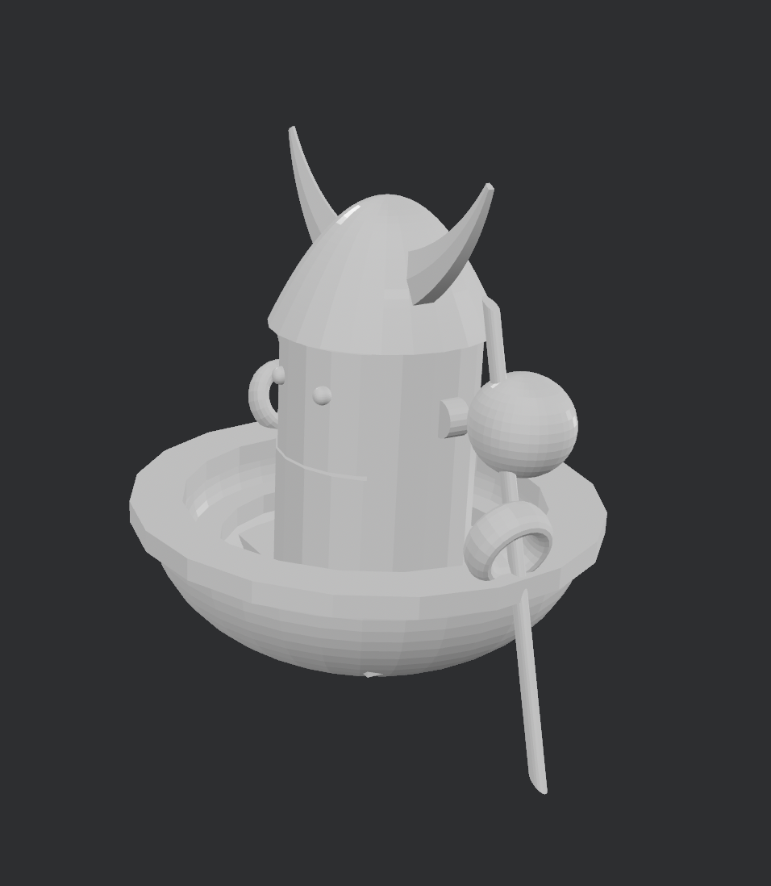
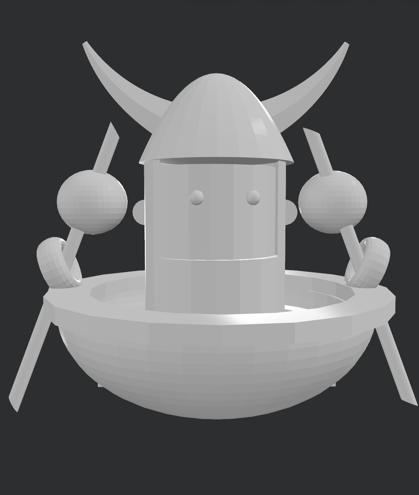

V I K I N G
This project is a miniature model of the Coracle ship in a game called Battle TABS I used to play. I created this in my first year in Intermediate school on TinkerCAD. The goal was to create a keychain design, and learn the basics of 3D modelling. This project reflects an early stage of my learning in 3D design, it also represents an important step in my developing and understanding of 3D modelling..


Software: TinkerCAD
Year: 2023
Focus: Basics